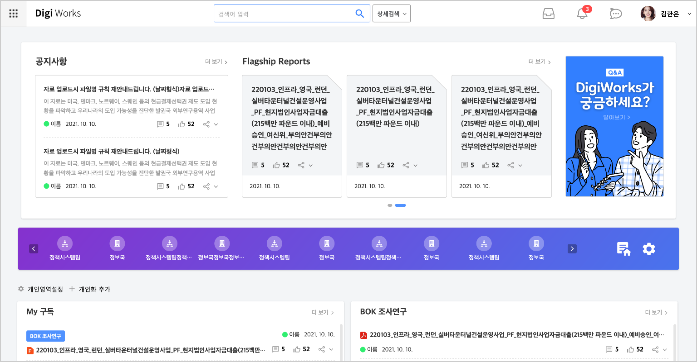
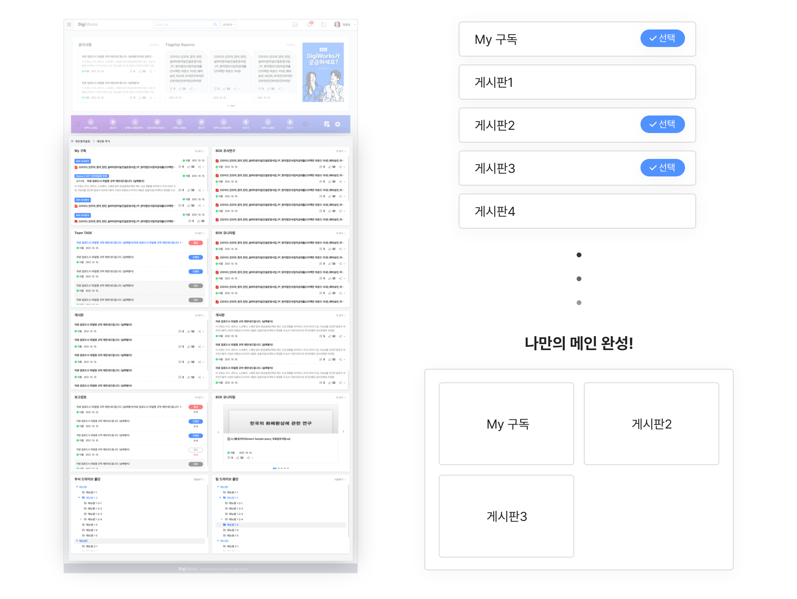
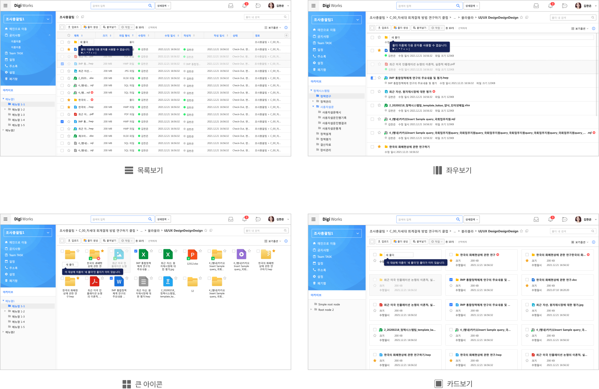
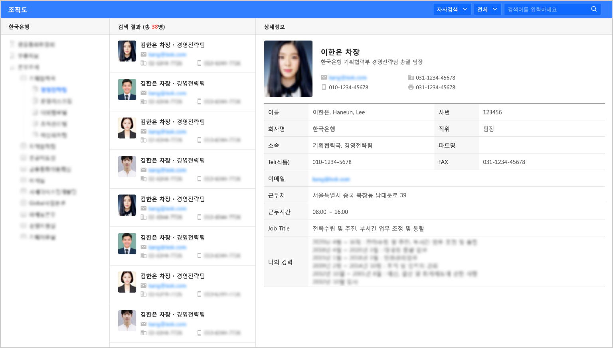
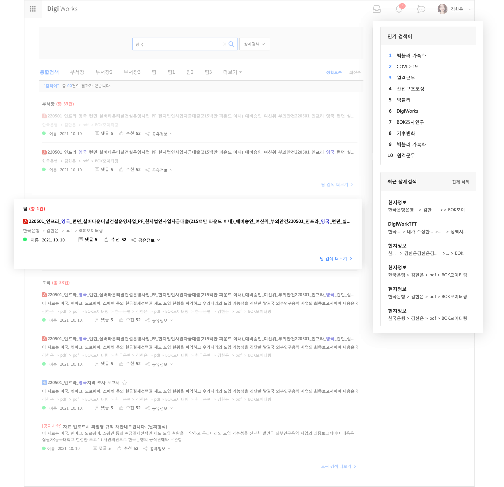

SEO JEA
이력서
Notion
경력기술서
한국은행 자료 공유를 위한 포털형 사이트 구축
단순하면서도 명확한 UI를 통해 쉽고 빠르게 서비스를 익히고 사용할 수 있도록 디자인 하였습니다.
사용자의 빠른 목적달성을 위한 기능 중심적인 UX를 제공합니다.
작업기여도
디자인 50%
웹 퍼블리싱 100%

메인 웹파트 영역을 사용자가 직접 구성하여
정보에 대한 접근성과 편의성을 높였습니다.
사용자 자신이 직접 구성하는 메인 웹파트를 통해 필요없는 정보에 대한 피로도를 낮춰 서비스에 대한 만족도를 높였습니다.

사용자가 원하는 선택하여 사용할 수 있도록
다양한 뷰모드를 제공합니다.
사용자에게 익숙한 UX와 기능적 목적을 조합한 UI로 높은 사용성을 제공합니다.

명확하고 간단한 UI를 채택하였습니다.
사용자의 빠른 정보 습득을 도와줄 수 있도록 다양한 정보를 제공하는 페이지는 기본적이고 명확한 UI를 채택하였습니다.

자료 위주의 결과 페이지와
사이드 영역의 부가기능을 통해 편의성을 높였습니다.
자료를 찾기위한 검색이라는 사용자의 목표를 달성하기 위해 자료 위주의 결과를 보여주고
인기 검색어, 최근 검색기록을 제공하여 사용자 편의성을 높였습니다.

목록으로 돌아가기